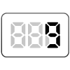

【009】値を四捨五入した結果を表示

- プロンプト例
JavaScriptで値を四捨五入した結果を表示する問題を５問作成して
- 数値の値を四捨五入するには、数学関数「Math.round( )」を使います
Math.round(数値の値)
Math.round() とは
Math.round() は、数値を「四捨五入」して整数にする関数です。
👉 小数点以下が
- 0.5以上 → 切り上げ
- 0.5未満 → 切り捨て
になります。
基本の使い方
Math.round(数値)
【例】
console.log(Math.round(3.2)); // 3 console.log(Math.round(3.5)); // 4 console.log(Math.round(3.8)); // 4
| 元の数 | 結果 |
|---|---|
| 3.2 | 3 |
| 3.5 | 4 |
| 3.8 | 4 |
マイナスの数の四捨五入
console.log(Math.round(-2.3)); // -2 console.log(Math.round(-2.5)); // -2 console.log(Math.round(-2.7)); // -3
| 元の数 | 結果 |
|---|---|
| -2.3 | -2 |
| -2.5 | -2 |
| -2.7 | -3 |
⚠ 注意ポイント
- 2.5 は -3 ではなく -2 になる のがポイントです。
→ 0 に近い方へ丸められる
小数第2位で四捨五入する方法
例：小数第2位で四捨五入（＝小数第1位まで表示）
let num = 3.14159; let result = Math.round(num * 10) / 10; console.log(result); // 3.1
仕組み
- ×10 → 31.4159
- Math.round() → 31
- ÷10 → 3.1
よく使うパターンまとめ
① 整数に四捨五入
Math.round(数値)
② 小数第1位で四捨五入
Math.round(数値 * 10) / 10
③ 小数第2位で四捨五入
Math.round(数値 * 100) / 100
Math.floor / Math.ceil との違い
| 関数 | 意味 | 例: 3.7 |
|---|---|---|
| Math.round | 四捨五入 | 4 |
| Math.floor | 切り捨て | 3 |
| Math.ceil | 切り上げ | 4 |
🔸 練習問題
問題1
console.log(Math.round(2.4));
問題2
console.log(Math.round(2.5));
問題3
console.log(Math.round(9.9));
問題4
console.log(Math.round(-3.2));
問題5
console.log(Math.round(-3.5));
🔸 練習問題（小数点の桁数）
問題6
let num = 3.46; console.log(Math.round(num * 10) / 10);
問題7
let num = 8.444; console.log(Math.round(num * 100) / 100);
問題8
let num = 1.995; console.log(Math.round(num * 100) / 100);
🔹 練習問題（応用）
問題9
let price = 1280; console.log(Math.round(price * 1.1));
問題10
let score = 79.49; console.log(Math.round(score / 10) * 10);
🔰 解答例
問題1
Math.round(2.4)
答え：2
👉 小数部分は 0.4 → 0.5未満 → 切り捨て
問題2
Math.round(2.5)
答え：3
👉 0.5以上 → 切り上げ
問題3
Math.round(9.9)
答え：10
👉 0.9 → 切り上げ
問題4
Math.round(-3.2)
答え：-3
👉 -3.2 は -3 に近い → 0 に近い方へ丸める
問題5
Math.round(-3.5)
答え：-3
👉 -3.5 は -4 と -3 の真ん中
👉 0 に近い方 → -3
⚠️ ここは超重要ポイント！
問題6
let num = 3.46; Math.round(num * 10) / 10
答え：3.5
計算手順
- 3.46 × 10 → 34.6
- Math.round(34.6) → 35
- 35 ÷ 10 → 3.5
問題7
let num = 8.444; Math.round(num * 100) / 100
答え：8.44
計算手順
- 8.444 × 100 → 844.4
- Math.round(844.4) → 844
- 844 ÷ 100 → 8.44
問題8
let num = 1.995; Math.round(num * 100) / 100
答え：2.0
計算手順
- 1.995 × 100 → 199.5
- Math.round(199.5) → 200
- 200 ÷ 100 → 2.0
問題9
let price = 1280; Math.round(price * 1.1)
答え：1408
👉 消費税10%を加算
計算手順
- 1280 × 1.1 → 1408
- Math.round(1408) → 1408
問題10
let score = 79.49; Math.round(score / 10) * 10
答え：80
計算手順
- 79.49 ÷ 10 → 7.949
- Math.round(7.949) → 8
- 8 × 10 → 80
👉 10の位で四捨五入するテクニック
🎯 完全理解のためのまとめ
| やりたいこと | 書き方 |
|---|---|
| 整数に四捨五入 | Math.round(x) |
| 小数第1位 | Math.round(x * 10) / 10 |
| 小数第2位 | Math.round(x * 100) / 100 |
| 10の位で四捨五入 | Math.round(x / 10) * 10 |
| 100の位で四捨五入 | Math.round(x / 100) * 100 |